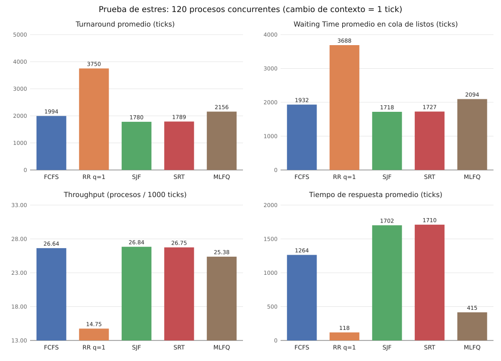
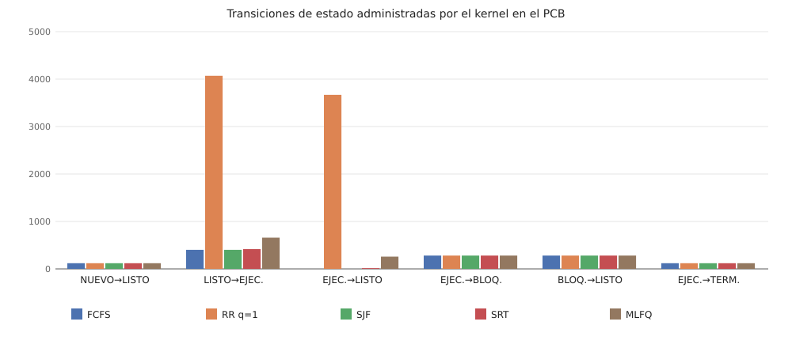
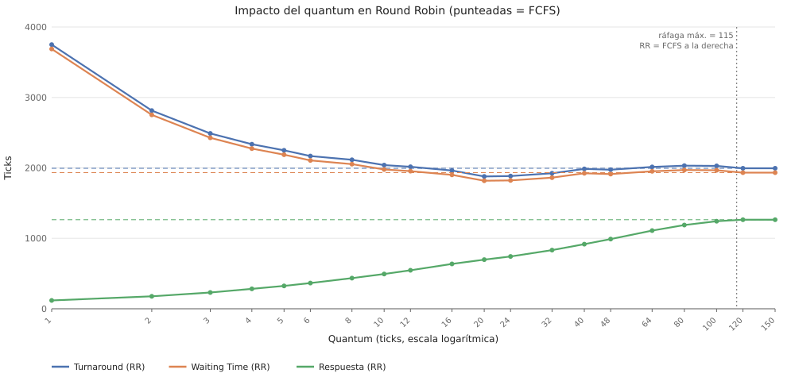

Equipo: EMMYS_PC (Windows, AMD64) · 120 procesos concurrentes · cambio de contexto = 1 tick
| Algoritmo | Turnaround prom. | Waiting Time prom. | Respuesta prom. | Throughput (proc/1000 t) | CPU útil % | Cambio de contexto % | Cambios de contexto | Terminados |
|---|---|---|---|---|---|---|---|---|
| FCFS | 1994.36 | 1932.47 | 1263.75 | 26.637 | 90.34 | 8.81 | 397 | 120/120 |
| RR q=1 | 3750.23 | 3688.34 | 118.38 | 14.751 | 50.03 | 49.97 | 4065 | 120/120 |
| SJF | 1780.15 | 1718.26 | 1701.67 | 26.840 | 91.03 | 8.97 | 401 | 120/120 |
| SRT | 1788.52 | 1726.62 | 1710.00 | 26.750 | 90.73 | 9.27 | 416 | 120/120 |
| MLFQ | 2156.05 | 2094.16 | 415.23 | 25.375 | 86.06 | 13.94 | 659 | 120/120 |


| Quantum | Turnaround prom. | Waiting Time prom. | Respuesta prom. | Throughput | Cambio de contexto % | Cambios de contexto |
|---|---|---|---|---|---|---|
| 1 | 3750.23 | 3688.34 | 118.38 | 14.751 | 49.97 | 4065 |
| 2 | 2814.07 | 2752.18 | 176.61 | 19.314 | 34.23 | 2127 |
| 3 | 2489.28 | 2427.38 | 231.07 | 21.536 | 26.70 | 1488 |
| 4 | 2335.22 | 2273.33 | 282.56 | 22.792 | 21.31 | 1122 |
| 5 | 2249.02 | 2187.12 | 325.00 | 23.744 | 19.13 | 967 |
| 6 | 2168.03 | 2106.14 | 364.84 | 24.189 | 17.15 | 851 |
| 8 | 2115.29 | 2053.40 | 435.32 | 25.105 | 14.06 | 672 |
| 10 | 2039.50 | 1977.61 | 493.42 | 25.483 | 12.76 | 601 |
| 12 | 2016.12 | 1954.23 | 546.46 | 25.690 | 12.05 | 563 |
| 16 | 1962.50 | 1900.61 | 636.48 | 25.980 | 11.06 | 511 |
| 20 | 1878.81 | 1816.92 | 697.40 | 26.172 | 10.40 | 477 |
| 24 | 1883.57 | 1821.67 | 742.49 | 26.281 | 10.03 | 458 |
| 32 | 1923.07 | 1861.17 | 832.36 | 26.391 | 9.65 | 439 |
| 40 | 1984.90 | 1923.01 | 917.36 | 26.443 | 9.48 | 430 |
| 48 | 1973.74 | 1911.85 | 989.38 | 26.502 | 9.28 | 420 |
| 64 | 2013.47 | 1951.58 | 1109.88 | 26.555 | 9.09 | 411 |
| 80 | 2031.67 | 1969.78 | 1188.20 | 26.578 | 9.01 | 407 |
| 100 | 2027.93 | 1966.04 | 1242.29 | 26.608 | 8.91 | 402 |
| 120 | 1994.36 | 1932.47 | 1263.75 | 26.637 | 8.81 | 397 |
| 150 | 1994.36 | 1932.47 | 1263.75 | 26.637 | 8.81 | 397 |

Bitácoras de eventos del kernel: carpeta bitacoras/. Datos: comparativa.csv, barrido_quantum.csv, carga.csv.